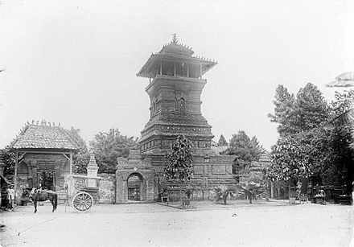
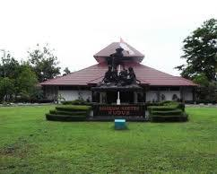
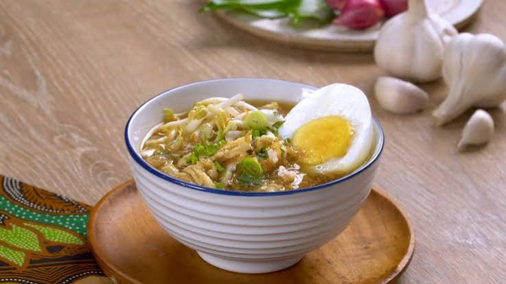
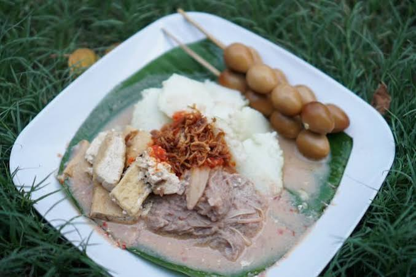

SEJARAH KOTA KUDUS

Kota Kudus didirikan oleh Sunan Kudus (Ja'far Shadiq) pada tahun 1549
Masehi. Nama "Kudus" diambil dari kata Al-Quds (Yerusalem)
sekembalinya beliau dari Palestina. Kota ini berkembang sebagai pusat
penyebaran agama Islam di Jawa Tengah, terkenal dengan toleransi
budaya tinggi, serta dikenal sebagai Kota Kretek.
DESTINASI WISATA
Kota Kudus menyimpan pesona tersembunyi yang siap memikat hati para
pelancong. Daerah ini memadukan keindahan alam pegunungan yang asri
dengan warisan sejarah dan budaya yang sangat kental. Berkeliling di
sini memberikan atmosfer ketenangan sekaligus wawasan edukasi religi
yang mendalam bagi siapa saja. Dan beberapa destinasi di kota Kudus
antara lain adalah
Menara Kudus
Masjid Menara Kudus merupakan ikon wisata religi paling utama di Kota
Kudus. Keunikan destinasi legendaris ini terletak pada menaranya yang
dibangun menyerupai candi hindu kuno, mencerminkan harmoni budaya yang
indah. Tempat bersejarah ini selalu ramai dikunjungi peziarah dan
wisatawan untuk berfoto.

Museum Kretek
Museum Kretek adalah satu-satunya museum rokok kretek di Indonesia
yang menyimpan sejarah besar industri lokal. Di sini, pengunjung dapat
melihat peralatan tradisional pembuat rokok, miniatur rumah adat Kudus
(Joglo Pencu), hingga wahana permainan air keluarga. Tempat edukatif
ini menjadi magnet tersendiri bagi wisatawan.
Wisata Alam Desa Rahtawu
Desa Rahtawu menawarkan pesona alam lereng Gunung Muria yang sangat
asri dan sejuk. Destinasi alam terpopuler ini menyajikan aliran sungai
jernih, jembatan gantung estetik, kafe-kafe kekinian, dan deretan spot
foto Instagramable. Lokasi ini menjadi pilihan utama masyarakat untuk
melepas penat di akhir pekan.
MAKANAN KHAS
Kota Kudus menyimpan kekayaan kuliner tradisional yang sangat
menggugah selera bagi para pencinta makanan. Setiap hidangannya
menawarkan perpaduan rasa manis dan gurih yang khas dengan kuah rempah
yang kaya. Menjelajahi kuliner di sini memberikan pengalaman rasa
otentik yang legendaris dan selalu bikin rindu. Dan beberapa makanan
khas di kota Kudus antara lain adalah

Soto Kudus
Soto Kudus merupakan kuliner legendaris yang sangat ikonik dengan
penyajian unik menggunakan mangkok kecil. Ciri khas utamanya adalah
kuah bening kekuningan kaya rempah yang gurih, dipadukan dengan
suwiran daging ayam atau kerbau. Hidangan hangat ini biasanya
dinikmati bersama aneka sate kerang, telur puyuh, dan perkedel.
Sate Kerbau
Sate Kerbau menjadi kuliner unik khas Kudus karena penghormatan
sejarah terhadap sapi pada masa Sunan Kudus. Daging kerbau dimemarkan
terlebih dahulu hingga sangat empuk, lalu dibakar dengan bumbu kelapa
manis. Disajikan dengan siraman saus kacang kental bertekstur halus,
makanan ini menawarkan kombinasi rasa manis gurih tiada tanding.

Lentog Tanjung
Lentog Tanjung adalah menu sarapan tradisional favorit warga Kudus
yang berasal dari Desa Tanjungkarang. Makanan ini terdiri dari
potongan lontong padat, sayur nangka muda (tewel), dan lodeh
tahu-tempe. Disiram kuah santan kental gurih encer dan taburan bawang
goreng, hidangan beralas daun pisang ini makin mantap ditambah sate
telur puyuh.